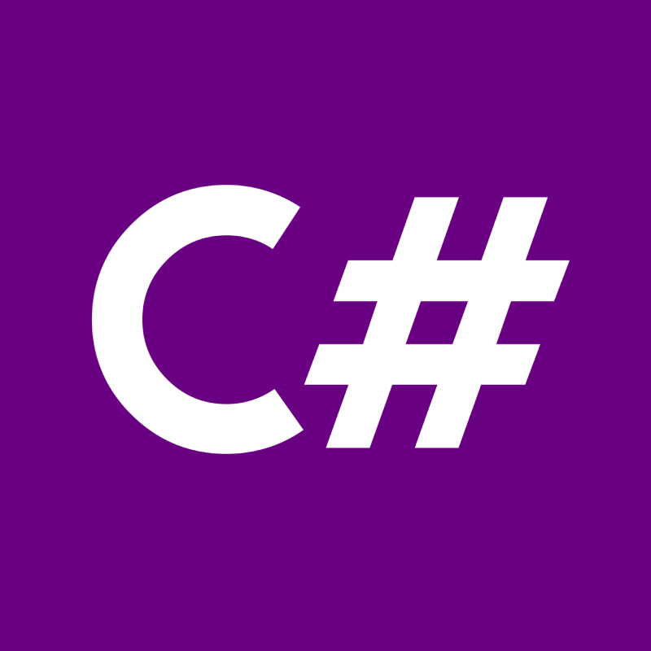

MaxSessions
Comment ne pas blâmer SignalR quand les perfs vont mal ?Introduction
(un peu trop longue)
(qui a pas trop de rapport)
Paris


...

Phases qualificatives
Format


Rapport ?


- Beaucoup d'applis existantes
- Répondent à 80% du besoin
- Pas fait par un Max
Back
-
 .net8 (je sais faire que ça)
.net8 (je sais faire que ça)
- Fichier JSON tout claqué
-
 SignalR pour pas appuyer sur F5
SignalR pour pas appuyer sur F5
Front
 React
React-
 Tailwind, parce que ce qui est bien avec tailwind c'est que c'est pas trop verbeux en un sens et ça permet de faire des choses simples tout en ayant une certaine liberté
Tailwind, parce que ce qui est bien avec tailwind c'est que c'est pas trop verbeux en un sens et ça permet de faire des choses simples tout en ayant une certaine liberté
-
SignalR pour pas appuyer sur F5
Data
 JSON Flat file DataStore
JSON Flat file DataStoreSignalR
-
Techno real-time pour du .net
- Prend la première techno compatible
-  Librairie Front JS/TS/C#
Petite démo
Après la tempète
JsonDataFile-Yeet.gif